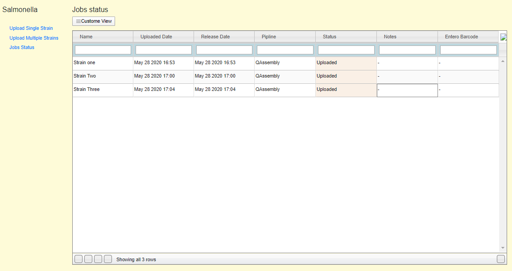

Jobs¶
DEFINE JOBS * This option allows the user to check his assembly jobs status

Jobs Status dialog¶
Notes¶
We should modify this table to include batch jobs rather than single strain job
A link for each batch should be provided so the user can check the status of each strain
- The previous link will open other dialog which allow the user to:
check the status of the assembly,
alert metadata,
provide new read files in case of the assembly job failed due to read files
submit the strains metadata along with read files to Warwick EnteroBase.
The previous functions are not implemented yet